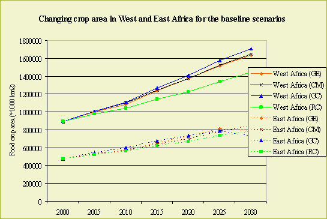
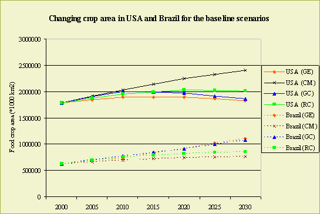
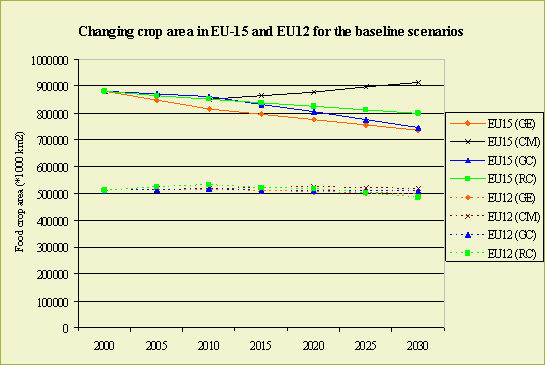
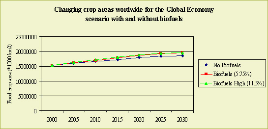
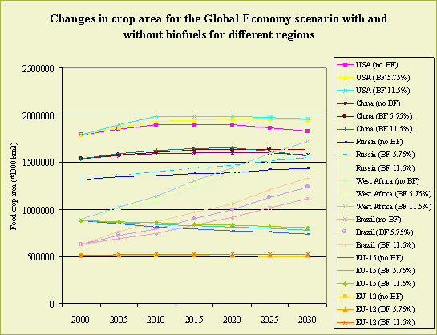

Highlights
World wide crop land area will expand with almost 25% towards 2030. This trend
is opposite of the EU27 – especially EU15 - developments, which shows
a stable or declining agricultural area.
World wide agricultural expansion is largest in the Global Economy scenario. This will lead to most pressure on planet indicators such as biodiversity, erosion and carbon sequestration. Positive developments in Europe in the Global Economy scenario come alongside with extra pressure elsewhere on the globe.
Especially in developing countries agriculture will expand. This will have a strong impact in their environment. Main drivers behind this increase are economic growth, liberalization, population growth and the introduction of the fist generation of biofuels.
The introduction of bio-energy crops will raise the pressure on the land. Especially in the world regions Brazil, the US and West Africa the impact of bio-energy directive will be noticeable.

Figure 1a: Predicted changes in food crop area for
the baseline scenarios for West and East Africa.
Globalization versus Ecosystems
Although Eururalis focuses on Europe, the scenarios cannot be seen without the
global context. On the global scale most radical changes in land-use are expected
in the developing countries, since the economic growth is highest in these scenarios.
Moreover, liberalization will have a major impact on exporting regions like
South America and Australia. The expansion of agricultural land in regions like
Latin America, Africa and Asia is possible, but at the cost of natural vegetation.

Figure 1b: Predicted changes in food crop area for
the baseline scenarios for USA and Brazil

Figure 1c: Predicted changes in food crop area for
the baseline scenarios in Europe
Because of high economic activities, Global Economy results in high pressure on the land and consequently at the ecosystems, whereas an economic less active world like Continental Market shows lower pressures. This is the global picture.
Here, the results confirm that the pressure on the ecosystems through high economic activities and a large increase in arable land expansion can be very high as a result of increasing economic wealth that goes together with globalization.
In a total analysis of liberalization, these kinds of drawbacks for the environmental system should be considered too. In the liberalizing scenario Global Co-operation, in which there is strong notion of environmental problems, the pressures on the environment can be lowered by implementing policies on persisting environmental problems like climate change (in Global Co-operation stringent climate policies are implemented). Consequently, a big increase of arable land is combined with lower pressures on the remaining natural vegetation.
In the Regional Communities scenario, the lowest impacts are expected because
of the low economic activities and environmental focus. However, economically
the Regional Communities scenario leads to less beneficial conclusions.
Liberalisation versus market protection
As shown in figures 1a-c crop area can increase drastically in different regions
in the world. As expected the USA profits from the market protection in the
transatlantic market of scenario Continental Market, while the opposite effect
is visible for Brazil. From Figure 1, it becomes clear that Africa will experience
a major increase in agricultural land in each scenario, being a result of the
expected population increase in Africa in the coming 30 years. Moreover, changes
in diet towards more meat also contributes to a further increase of land for
grass to feed the animals.
Further, Latin America and Oceania show a large difference between liberalized
scenarios (Global Economy and Global Co-operation) and regionalized scenarios
(Continental Market and Regional Communities). This is shown in Figure 1b for
Brazil.
Introducing biofuels
Interesting is also to look at the impact of the introduction of the first generation
of bio-energy. This is shown in figure 2 for Global Economy scenario with different
options of the ambition of stimulating bio-energy. Similar to figure 1 there
is a large increase in crop areas for the developing regions Africa and Latin
America, even increasing for the scenario variants that include biofuels.

Figure 2a: Changing crop areas for the Global Economy
scenario variants without (Global Economy Baseline) and with biofuels (Global Economy Biofuels 5.75%
and Global Economy High Biofuels 11.5%) worldwide

Figure 2a: Changing crop areas for the Global Economy
scenario variants without (Global Economy Baseline) and with biofuels (Global Economy Biofuels 5.75%
and Global Economy High Biofuels 11.5%) for different regions (below).